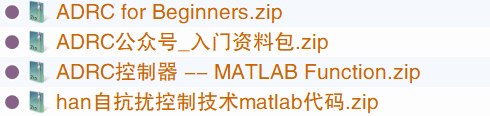

README¶
Summary
可以通过 《自抗扰控制入门 朱斌》学习，通俗易懂
B 站 自抗扰控制-ADRC的个人空间_哔哩哔哩_bilibili
其实直接用的话很简单, 不用看那么多东西
1 代码实现¶
可以使用 S 函数进行控制器更新.
MATLAB Toolbox 上的一个 LADRC 实现, 说是可以当一个 PID 模块使用
Active Disturbance Rejection Control (ADRC) Toolbox - File Exchange - MATLAB Central
但是我没搞明白怎么用, 况且 ADRC 应该有系统输出作为输入…
2 其他参考资料¶
自抗扰控制-ADRC的个人空间_哔哩哔哩_bilibili 那里能找到 QQ 群, 群里有很多资料… 比如下面这些, 就不保留了.

自抗扰控制算法的核心，在于通过扩张状态观测器动态观测系统的 “总扰动”，在补偿系统后，将其简化为积分器串联系统，由此，扩张状态观测器观测得到的 “总扰动” 补偿环节可等效于 PID 控制算法中的积分项作用，并且，其没有积分项的负面影响。
控制系统设计专题（三）—— 自抗扰控制算法（下）_遥远的乌托邦的博客 - CSDN 博客_自抗扰控制算法
有什么控制方式是不太精确需要系统模型的，除了pid,智能控制里面模糊呀，神经网络什么的？ - 知乎
如何评价韩京清研究员提出的 ADRC 控制算法？是否可完全替代现有的 PID 应用场合？ - 三脚猫 Frank 的回答 - 知乎
https://www.zhihu.com/question/64738752/answer/1257399926
- 不确定性和鲁棒性基础。苏宏业教授的公开课，《鲁棒控制理论》
鲁棒控制理论(浙江大学 苏宏业)_哔哩哔哩_bilibili - 非线性控制基础。参考书《Applied nonlinear control》
韩京清：从 PID 到自抗扰控制技术。大概是这名字，一本书，47 块钱。
如果英语好，建议再看高志强，LADRC。论文名忘了。
自抗扰控制算法（一）— Simulink 实现 - 知乎
自抗扰控制基础 - 知乎
ADRC - 搜索
自抗扰控制理论（一）ADRC 的原理 - 知乎
何谓自抗扰？_哔哩哔哩_bilibili
(5 条消息) 自抗扰控制的入门学习（一）—— 前言_昔时扬尘处 - CSDN 博客_自抗扰控制入门
ADRC入门讲座（高志强，2015年12月）_哔哩哔哩_bilibili
(5 条消息) 【转载】自抗扰控制器的学习过程_昔时扬尘处 - CSDN 博客_自抗扰控制的优缺点
采用这篇论文的无人艇模型，另外第2章的路径跟踪方法（即导引方法）也试试经典的视线导引法
2015年12月自抗扰控制ADRC讲座与研讨会实况录像（上传的顺序还没有调整好）_哔哩哔哩_bilibili
Cite
PID 是通用控制器的一般形式，它的原理和参数整定都不容易说清楚。ADRC 不同的是，当你选用这个理念设计控制器的同时，至少应该能够说清楚下面几点：1）内外扰动是什么？什么频率范围？ESO 怎么设计才合理？带宽需要多大？是不是在可允许的范围之内？2）系统的控制设计的各项要求是什么？对应的控制带宽多大？在这个带宽内 ESO 能近似地把对象化为串联积分器吗？3）在控制带宽内，对象近似的阶数是多少（控制信号 u 直接对应于输出的哪个导数？）？有没有高频动态的问题？相位裕度多大才可以？ 讲出道理，有针对性地去设计控制器和调参，你的论文就有底气了。
即使不能一步到位，也可以把上述的步骤作为思路和目标，一步一步地进入工程控制的理性思维。
Cite
刘焕然-北京理工大学 9:38:55
我想问一下，控制器带宽和状态观测器带宽有明确的倍数要求吗，例如 3-5 倍
刘焕然-北京理工大学 9:39:39
我能否取一个状态观测器带宽，然后自己调整控制器的带宽？
Demux 加入本群。
flyinsky-北航 9:45:47
可以，但一般不这么做，控制带宽往往是根据你的控制指标决定的。
flyinsky-北航 9:47:55
通常取观测器带宽大于控制带宽，其实就是为了保证系统的标称性能（无扰动时的性能），当然如果观测器带宽小于控制带宽时控制性能能满足你的要求也未尝不可。
带宽观测器尽可能大当然好了，这样系统就近似积分串联，你的标称性能就可以保证
Cite
Jh Li - 华南理工 10:37:30
@flyinsky-北航 请问带宽大，抗扰能力本身就很强应该如何理解？指的是潜在抗扰能力还是另有所指？
赵天一-哈工大 10:38:35
kp 越大，扰动传递函数的幅频越小
flyinsky-北航 10:38:37
@Jh Li - 华南理工 大带宽就意味着强抗扰性和快响应性
噪声一般都是在高频段，大带宽就意味着对噪声也越敏感，折中考虑